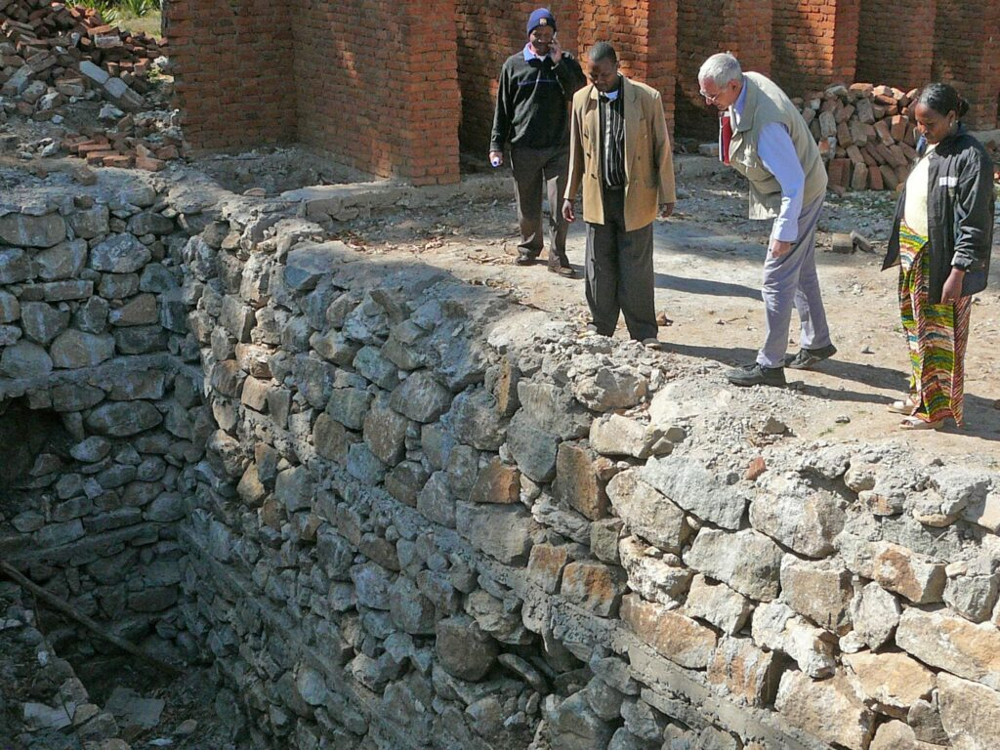
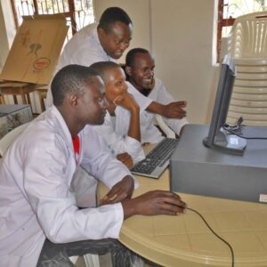
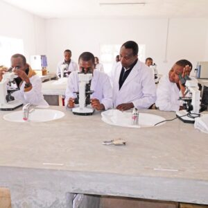
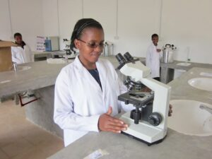

Bishop Nicodemus Hhando College of Health Science
Ein Laboranten-Kolleg im Hochland Tansanias – seit 2015 unser flagship project im Gesundheitsbereich.
Der große Mangel an Laboranten in den Krankenhäusern und Krankenstationen im ländlichen Bereich Tansanias führte zur Gründung des Bishop Nicodemus Hhando College of Health Science (BNHCHS) in Bashanet. Im Jahr 2015 ging das Kolleg mit einer zweijährigen Ausbildung in Betrieb. Kusaidia Afrika war von Anbeginn ein wichtiger Sponsor.

Die Herkulesaufgabe
Kaum war die zweijährige Ausbildung mit dem Abschluss Certificate etabliert, änderte der Staat seine Bildungspolitik. Das Certificate wurde quasi von heute auf morgen nicht mehr als staatlicher Ausbildungsgang anerkannt. Das Kolleg musste auf eine dreijährige Ausbildung mit dem Abschluss Diplom erweitert werden.
Eine Herkulesaufgabe: Weitere Gebäude mussten errichtet, weitere Laborgeräte angeschafft und Lehrer höher qualifiziert werden. Im Herbst 2021 haben die ersten Studenten die Diplomprüfung erfolgreich abgelegt.





Die Menschen dahinter
Bei unserem Besuch 2015 wurde das Kolleg offiziell eingeweiht. Mit dabei: Dr. Uledi, Regional Medical Officer der Region Manyara, die treibende Kraft des Kollegs Sr. Basilisa Panga – Ärztin und Health Secretary der Diözese Mbulu –, der Principal Jeddy MZungu, sowie Uschi und Jürgen Krahl und Rolf Schnee von Kusaidia Afrika.
Eine gute Laborantin rettet Leben.
Mit 600 € jährlich finanzieren Sie das komplette Studium einer Studentin am Kolleg.